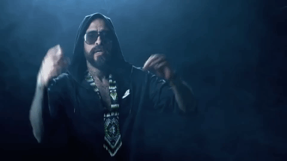
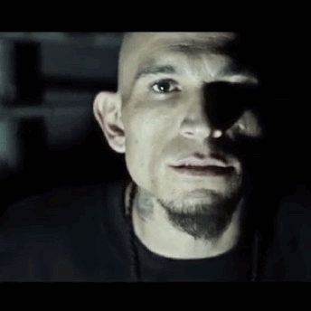

El rap mexicano se ha convertido en un espejo de la sociedad. A través de sus letras, los raperos abordan una variedad de temas que van desde lo íntimo hasta lo colectivo, desde lo cotidiano hasta lo estructural. Esta capacidad para reflejar la complejidad del entorno es una de las razones por las que el rap ha conectado tan profundamente con amplios sectores de la juventud mexicana.
Uno de los temas más recurrentes es la violencia urbana. Muchos raperos narran la realidad de los barrios en los que crecieron, donde la presencia del crimen organizado, la brutalidad policial y la falta de oportunidades configuran un ambiente hostil. En canciones como “Me acuerdo” de Gera MX o “Soy quien soy” de Santa Fe Klan, se entrelazan la melancolía, la rabia y la dignidad de quienes enfrentan la vida en contextos difíciles.
Otro tema central es la pobreza y la desigualdad social. El rap funciona como una crónica de lo que los medios de comunicación muchas veces no muestran: las carencias materiales, la falta de empleo, el abandono institucional, la precariedad de los servicios públicos. En este sentido, el rap mexicano cumple una función testimonial, haciendo visibles las realidades invisibilizadas.
También hay una fuerte presencia de discursos identitarios y culturales. Muchos artistas reivindican sus raíces indígenas, mestizas o populares, cuestionando los modelos de belleza, éxito y poder que impone el capitalismo global. En este ámbito destaca el trabajo de Bocafloja, quien utiliza el rap como una herramienta decolonial, feminista y antirracista.
No puede pasarse por alto la presencia de temas personales, como el amor, el desamor, la amistad, la familia, la superación o la muerte. Estos temas conectan con el oyente en un plano emocional, permitiendo una identificación profunda. A diferencia del estereotipo que presenta al rap solo como violento o agresivo, muchas letras contienen una sensibilidad poética que ha sido reconocida incluso en círculos académicos.
Además, en los últimos años han surgido voces femeninas que rompen con el machismo estructural del género. Raperas como Hispana, Ximbo, Jezzy P y Niña Dioz abordan temas como el feminismo, la violencia de género, el empoderamiento y la diversidad sexual, abriendo espacios para otras formas de expresión y representación.
En resumen, el rap mexicano no es homogéneo en sus temáticas, pero sí es profundamente representativo de su tiempo y lugar. Es un vehículo a través del cual se narran las múltiples realidades del país, desde sus luces hasta sus sombras, desde sus victorias cotidianas hasta sus heridas históricas.
Cartel de Santa

Tren Lokote

El Pinche Mara
Mr Yosie Lokote